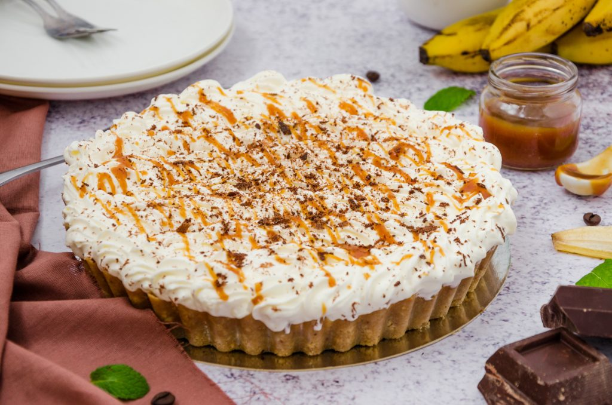

Aumento de vendas
Banoffee
Uma deliciosa torta, com massa crocante, recheio de doce de leite, banana, praliné de nozes pecan e chantilly. Uma sobremesa irresistível para os amantes de doces!
R$ 99,90